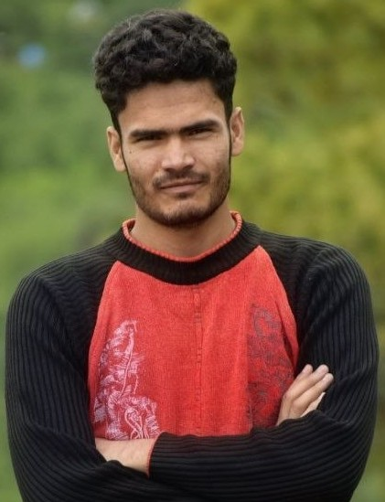

Education
PhD in Physics · IISER Mohali
Specialization: Optics & Photonics
I am a PhD researcher working in optics and photonics, with a particular interest in lasers, radiation pressure, interferometry, light-matter interaction, and emerging optical technologies.

My research sits at the intersection of fundamental optics and photonic applications. I am interested in understanding how light imparts radiation pressure at the fundamental level and how this can be applied to emerging optical technologies. I am also interested in highly sensitive measurement techniques, particularly interferometry, and in applying these techniques to develop highly sensitive instruments.
PhD in Physics · IISER Mohali
Specialization: Optics & Photonics
Laser physics, radiation pressure, interferometry, light-matter interaction, and precision measurements.
Department of Physical Sciences · IISER Mohali · Punjab, India
My research focuses on understanding light-matter interaction, radiation pressure, and highly sensitive optical measurements.
Investigating approaches for measuring radiation pressure using sensitive interferometry and studying light-matter interaction.
Studying interferometry as a highly sensitive length-measurement technique and applying it to investigate liquid deformation under various external factors. These methods can be used to develop highly sensitive sensors.
Optical alignment, optical cavities, laser characterization, detectors, imaging, and precision measurements.
High-precision measurement, imaging, and next-generation optical sensors.
My academic journey in physics, optics, and photonics.
IISER Mohali · Attosecond Laser Lab. Working on Interferometry and Light-Matter Interaction .
Kumaun University, Nainital · Department of Physics. Worked on Spatial Light Modulator .
Kumaun University, Nainital · Physics, Chemistry and Mathematics.
Arya Inter College, Deghat, Almora.
Arya Inter College, Deghat, Almora.
B. Singh et al., Optics Letters, Volume 51, No. 1, DOI: 10.1364/OL.578999. Read paper ↗
PHYCON 2026, IIT Ropar, Punjab · Best Oral Presentation Award.
I am interested in collaborations, scientific discussions, conferences, and opportunities in optics and photonics.